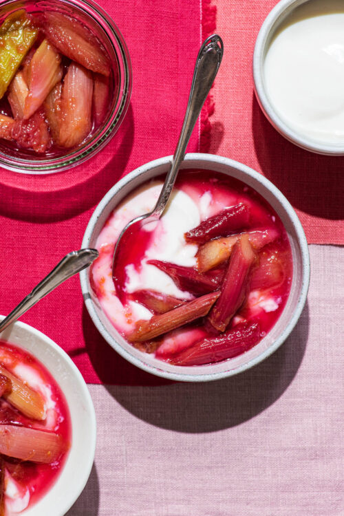

Greentea
Home

Description
Honey and rhubarb can be combined in various ways, including as a delicious infused honey, a shrub for cocktails, a compote, or baked into desserts like crisps or pies, offering a sweet and tart flavor combination.
Ingredients
- 1 2/3 cups chopped fresh rhubarb
- 2/3 cup honey
- 2/3 cup water
- 1 tablespoon grated fresh ginger
Steps
- For syrup, stir rhubarb, honey, water, and ginger together in a small saucepan. Bring to a boil; reduce heat to low and simmer, covered, for 15 minutes. Remove from heat; let cool completely, about 1 hour.
- Add club soda to a pitcher and stir gently. Serve over ice and garnish with fresh mint and rhubarb stalks.